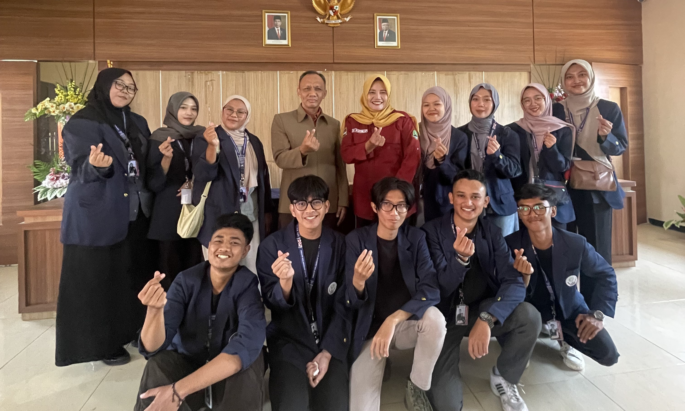

HARI KE-5
SOSIALISASI AWAL - KUNJUNGAN KE KETUA RT 02 DAN RT 03

Pada hari ketiga program Kuliah Kerja Nyata (KKN) SISDAMAS, Kelompok 265 dari Universitas Islam Negeri Sunan Gunung Djati Bandung
melanjutkan kegiatan sosialisasi awal di Kp. Cikawati, RW 04, Desa Pakuhaji, Kec. Ngamprah, Kab. Bandung Barat. Kunjungan ini
bertujuan untuk memperkenalkan diri dan program kerja kepada Ketua RT 03 dan RT 02 serta untuk mendapatkan gambaran umum tentang
kondisi sosial di kedua RT tersebut.
Di RT 03, kami disambut oleh Ketua RT yang dengan hangat menerima kedatangan kami. Dalam pertemuan singkat ini, kami memperkenalkan
diri sebagai mahasiswa yang akan melaksanakan KKN dan menjelaskan tujuan program kami. Ketua RT 03 memberikan gambaran tentang kondisi sosial warganya,
yang sebagian besar adalah petani dan pekerja kasar, dengan tantangan utama dalam bidang pendidikan dan akses terhadap fasilitas kesehatan.
Setelah kunjungan ke RT 03, kami melanjutkan sosialisasi ke RT 02. Di sini, Ketua RT juga menyambut kami dengan antusias. Sama seperti di RT 03,
kami memperkenalkan diri dan tujuan kegiatan KKN. Ketua RT 02 menjelaskan bahwa masyarakat di wilayah ini memiliki keragaman pekerjaan, termasuk
beberapa warga yang bekerja di sektor industri sekitar desa. Namun, masalah sosial seperti pengangguran dan kurangnya akses terhadap pendidikan
tinggi masih menjadi perhatian utama.
Dari kedua kunjungan ini, kami mendapatkan pemahaman yang lebih baik tentang kondisi sosial dan kebutuhan yang ada di Kp. Cikawati.
Hal ini penting untuk menyusun program kerja yang lebih efektif dan sesuai dengan kebutuhan masyarakat. Kami menyadari pentingnya
kolaborasi dan komunikasi yang baik dengan tokoh masyarakat seperti Ketua RT untuk mencapai hasil yang diinginkan.
Kunjungan ke Ketua RT 03 dan RT 02 merupakan langkah penting dalam fase awal sosialisasi program KKN kami. Melalui perkenalan dan
dialog dengan para pemimpin komunitas ini, kami berharap dapat membangun kerjasama yang produktif dan memberikan kontribusi
positif bagi masyarakat di Kp. Cikawati selama masa KKN ini.